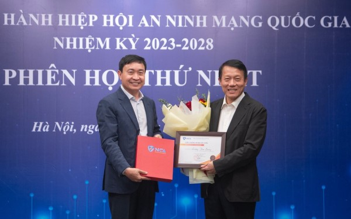
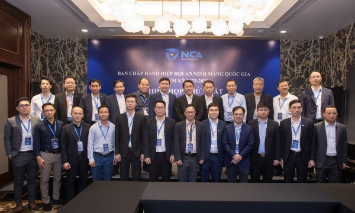
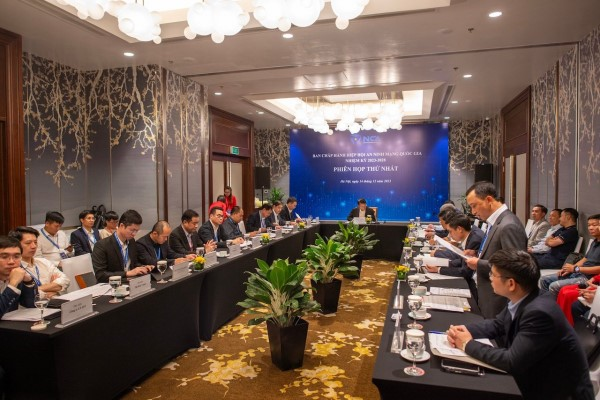

CAND - Thượng tướng Lương Tam Quang, Ủy viên Trung ương Đảng, Thứ trưởng Bộ Công an, Chủ tịch Hiệp hội An ninh mạng quốc gia nhiệm kỳ 2023-2028 chủ trì phiên họp.
Dự phiên họp có đồng chí Nguyễn Huy Dũng, Thứ trưởng Bộ Thông tin và Truyền thông cùng các thành viên Ban Chấp hành Hiệp hội An ninh mạng quốc gia nhiệm kỳ 2023-2028.
Phát biểu khai mạc phiên họp, Thứ trưởng Lương Tam Quang bày tỏ vui mừng khi Ban Chấp hành Hiệp hội An ninh mạng quốc gia nhiệm kỳ 2023-2028 (Hiệp hội An ninh mạng quốc gia) tổ chức phiên họp lần thứ nhất để cùng nhau thảo luận và thống nhất những vấn đề quan trọng cho việc triển khai hoạt động của hiệp hội thời gian tới; đặc biệt là việc kiện toàn bộ máy tổ chức nhân sự ban chấp hành và thông qua kế hoạch hoạt động năm 2024 cùng các văn kiện hiệp hội.

Trung tướng Nguyễn Minh Chính, Cục trưởng Cục An ninh mạng và Phòng, chống tội phạm sử dụng công nghệ cao trao kỷ niệm chương và giấy chứng nhận, huy hiệu tặng Thứ trưởng Lương Tam Quang.
Khẳng định việc thành lập Hiệp hội An ninh mạng quốc gia là một dấu mốc hiện thực hoá mục tiêu quyết tâm đưa an ninh mạng trở thành động lực chính cho sự phát triển quốc gia và sự nghiệp bảo vệ Tổ quốc, Thứ trưởng Lương Tam Quang tin tưởng và hy vọng rằng, tại phiên họp sẽ có nhiều ý kiến tham gia thảo luận chất lượng để hoàn thành các dự thảo văn kiện phục vụ hoạt động của hiệp hội thời gian tới. Từ đó, giúp bộ máy hiệp hội hoạt động hiệu quả với nhiều đột phá, sáng tạo trong năm 2024.
Thứ trưởng Lương Tam Quang, Chủ tịch Hiệp hội An ninh mạng quốc gia trao kỷ niệm chương, giấy chứng nhận và huy hiệu cho các thành viên ban chấp hành.
Tại phiên họp, Trung tướng Nguyễn Minh Chính, Cục trưởng Cục An ninh mạng và Phòng, chống tội phạm sử dụng công nghệ cao, Bộ Công an, Phó Chủ tịch Thường trực Hiệp hội An ninh mạng quốc gia đã báo cáo hoạt động của hiệp hội từ sau đại hội đến nay...
Tại phiên họp, các đại biểu đã biểu quyết kiện toàn bộ máy tổ chức nhân sự Ban Chấp hành Hiệp hội, bầu bổ sung đồng chí Nguyễn Duy Dũng, Thứ trưởng Bộ Thông tin và Truyền thông vào Ban Chấp hành Hiệp hội và được bầu là Phó Chủ tịch Hiệp hội nhiệm kỳ 2023-2028.
Phát biểu kết luận phiên họp, Thứ trưởng Lương Tam Quang chúc mừng đồng chí Nguyễn Duy Dũng, Thứ trưởng Bộ Thông tin và Truyền thông đã trúng cử vào ban chấp hành hiệp hội và giữ vai trò Phó Chủ tịch Hiệp hội An ninh mạng quốc gia; đồng thời đánh giá cao, biểu dương sự nỗ lực của ban thư ký, văn phòng hiệp hội trong thời gian ngắn đã hoàn thiện các thủ tục và công tác chuẩn bị cho phiên họp ban chấp hành và hoạt động của hiệp hội thời gian tới.

Các đại biểu tham dự phiên họp chụp ảnh lưu niệm.
Nhấn mạnh một số phương hướng và vấn đề trọng tâm triển khai hoạt động của hiệp hội năm 2024, Thứ trưởng Lương Tam Quang đề nghị Ban chấp hành Hiệp hội An ninh mạng quốc gia cần khẩn trương hoàn thiện bộ máy tổ chức và nhân sự của hiệp hội theo đề án tổ chức các ban chuyên môn trực thuộc hiệp hội đã được ban chấp hành thông qua trong tháng 1/2024, bao gồm phương án kiện toàn và quyết định tuyển dụng nhân sự của văn phòng hiệp hội; tuyển dụng các chức danh như kế toán trưởng, nhân sự phụ trách thông tin truyền thông, hành chính và hậu cần; triển khai hoạt động của 4 ban chuyên môn đã được ban chấp hành thông qua gồm ban truyền thông; ban nghiên cứu, tư vấn và phát triển công nghệ; ban nghiên cứu, đào tạo chính sách, pháp luật và hợp tác quốc tế và ban đào tạo, phát triển, hỗ trợ hội viên và vận động tài trợ.
Sau khi hoàn thiện và đi vào hoạt động, căn cứ vào chức năng, nhiệm vụ được giao cần sớm báo cáo phương án xây dựng một số tổ chức thuộc hiệp hội gồm Viện nghiên cứu, tư vấn chính sách, pháp luật về an ninh mạng; mạng lưới đạo tạo, huấn luyện an ninh mạng; Tạp chí An ninh mạng quốc gia. Trong đó, đề án thành lập Tạp chí An ninh mạng quốc gia là nhiệm vụ ưu tiên, quan trọng cần thực hiện nhằm đảm bảo công tác tuyên truyền, cảnh báo về an ninh mạng và nâng cao hình ảnh hiệp hội.

Quang cảnh phiên họp.
Về trụ sở hoạt động, Thứ trưởng Lương Tam Quang đề nghị ban thư ký sớm phối hợp với các cơ quan chức năng của UBND TP Hà Nội về việc thuê địa điểm, sớm có trụ sở làm việc để hiệp hội đi vào hoạt động bài bản, khoa học…
Ban Chấp hành Hiệp hội An ninh mạng quốc gia cần bám sát kế hoạch hoạt động năm 2024, triển khai ngay một số nhiệm vụ trọng tâm; xác định lộ trình và phương án triển khai tối ưu, có sự phân công cụ thể, khoa học, huy động được trí tuệ của tập thể và mạng lưới kết nối trong hiệp hội. Trong đó, hiệp hội cần phối hợp với Bộ Công an, Bộ Thông tin và Truyền thông cùng các cơ quan liên quan triển khai chiến dịch tuyên truyền phòng, chống tội phạm mạng…
Sớm đi vào triển khai hoạt động và phát huy vai trò trung tâm của Viện nghiên cứu, tư vấn chính sách, pháp luật về an ninh mạng; Trung tâm nghiên cứu công nghệ, đánh giá, chứng nhận, kiểm định về an ninh mạng; mạng lưới đào tạo, huấn luyện an ninh mạng; Tạp chí An ninh mạng quốc gia…, các tổ chức này là trụ cột cho các hoạt động của hiệp hội sau này.
“Triển khai công tác tuyên truyền, phổ biến chính sách pháp luật, kiến thức, kỹ năng về an ninh mạng cần tập trung vào tuyên truyền, cảnh báo về các loại hình tội phạm mạng, tội phạm sử dụng công nghệ cao mới, gây thiệt hại nghiêm trọng và bức xúc trong xã hội. Đối với các chính sách mới ban hành về an ninh mạng cần tăng cường tư vấn, hướng dẫn để tổ chức, doanh nghiệp và người dân nắm vững, tuân thủ”- Thứ trưởng Lương Tam Quang nhấn mạnh...
Nguồn: Công an nhân dân